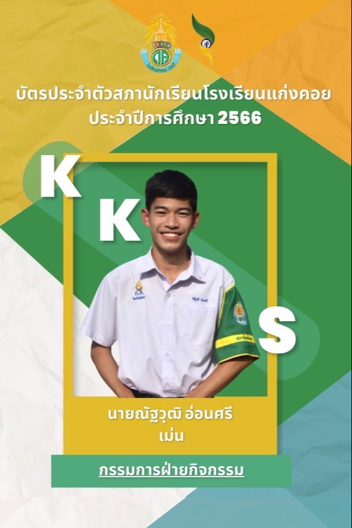
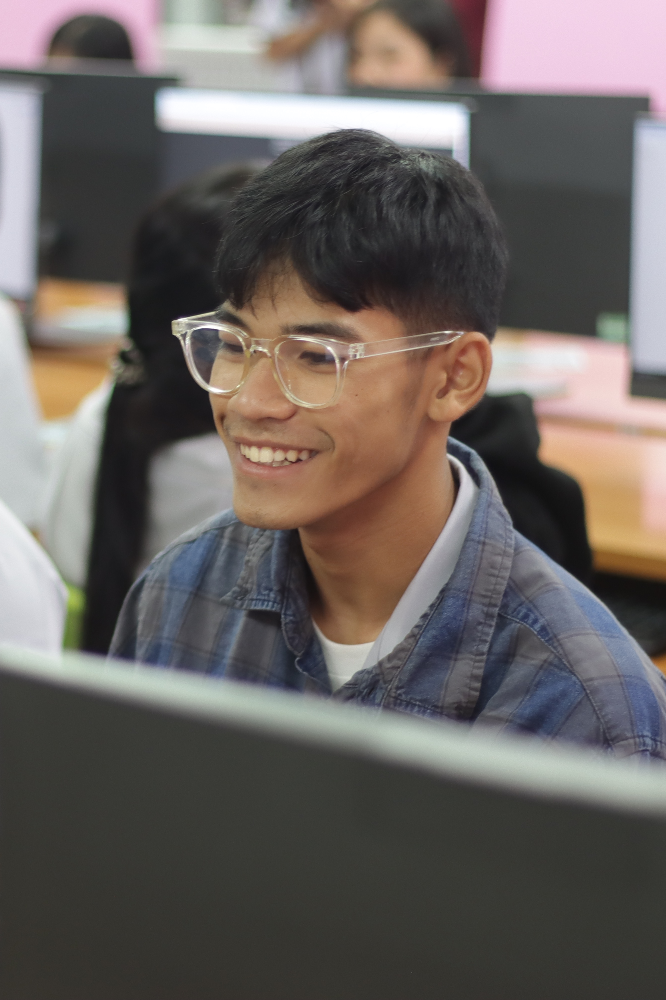

การเข้าร่วมกิจกรรม
รูปที่ 1 ได้รับเลือกตั้งให้เป็นคณะกรรมการสภานักเรียนโรงเรียนเเก่งคอย ประจำปี 2566
รูปที่ 2 เข้าร่วมกิจกรรมกีฬาสีภายในโรงเรียนเเก่งคอย ประจำปี 2567
รูปที่ 3 ได้เข้าร่วมอบรม Ai ณ วิทยาลัยเทคนิคสระบุรี เเผนก คอมพิวเตอร์ธุรกิจ ประจำปี 2568


